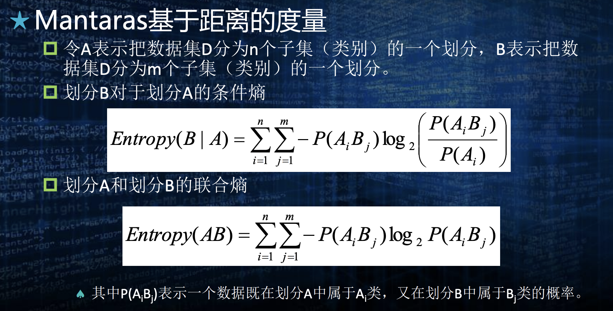

机器学习
Chap. 1¶
机器学习的基本问题 - 分类 - 预测 - 聚类 - 联想/关联: 相关性分析 - 优化
机器学习的基本方式
| 解决问题 | |
|---|---|
| 有监督学习 | 分类, 预测 |
| 无监督学习 | 聚类 |
| 半监督学习 | 分类, 预测 |
| 自监督学习 | 特征学习 |
| 强化学习 | 最优决策问题, 学习优化模式 |
基本过程
- 收集数据
- 清洗数据
- 提取特征
- 训练模型
- 获得知识(测试, 验证, 评估, 解释, 提高泛化性)
QA: 机器学习有哪些学习方式？这些学习方式的区别是什么? - 有监督学习 - 无监督学习 - 半监督学习 - 自监督学习 - 强化学习
Chap. 2¶
数据的属性的类型 - 名词属性 - 顺序属性 - 区间属性 - 比值属性
- 离散/连续属性
数据类型 - 记录数据 - 图数据 - 有序数据: 时间/空间顺序 - 序列数据 - 时序数据 - 空间数据
并非绝对分类, 视频是记录数据&有序数据的综合类型
数据预处理 -- 归一化 - 线性归一化 - Z-Score标准化 - 其他方法: 高斯函数, sigmoid 函数, softmax 函数
度量
- 相异性度量
- 明科夫斯基距离: 距离的通式 \((\sum_k|p_k-q_k|^{r})^{\frac{1}{r}}\)
- r=1: 曼哈顿距离
- r=2: 欧几里得距离
- r=\(\infty\): \(L_{max}/L_{\infty}\) 范数
- L0范数: 非0值的个数
- 明科夫斯基距离: 距离的通式 \((\sum_k|p_k-q_k|^{r})^{\frac{1}{r}}\)
- 距离度量
- 马氏距离: 借助协方差矩阵的逆来定义
- 优点: 量纲; 排除变量相关性
- 缺点: 不绝对(相对性), 不稳定(不鲁棒); 不一定存在
- 度量公理: 必须满足非负性, 对称性, 三角不等式
- 马氏距离: 借助协方差矩阵的逆来定义
- 相似性度量一般有: 最大相似度(相似度为1等价于二者相等), 对称性
- 余弦相似度(向量)
- 距离倒数: \(\frac{1}{1+d}\)
- 杰卡德系数 J(离散集合): 对应杰卡德距离(1-J)是度量. \(\frac{|A \cap B|}{|A \cup B|}\)
- Tanimoto系数(向量): 类似杰卡德系数, 用于向量. \(\frac{p\cdot q}{|p|^2+|q|^2-p\cdot q}\), 对应的Tanimoto距离 不是 度量
- Dice系数(离散集合)
- 皮尔逊相关系数(变量):
- 斯皮尔曼相关系数
- 熵: \(H(p)=-\sum_i p_i\log p_i\)
- 交叉熵: \(-\sum_i(p_i\log q_i)\)
- KL散度: \(\sum_i(p_i\log\frac{p_i}{q_i})\)
- 互信息: \(\sum_x\sum_y p(x,y)\log\frac{p(x,y)}{p(x)p(y)}\)
- 对称性
- 非负性
- X,Y完全无关 -> I=0
- X,Y完全相关 -> I=H(X)=H(Y)
评估原则 - 学习结果的合理性和有效性: 泛化能力越强越好 - 鲁棒性/健壮性: 处理非正常数据的能力 - 算法复杂度 - 时间复杂度, 空间复杂度: 简化问题, 降低要求/空间换时间/用并行化算法，提高并行度 - 模型适应性 - 模型描述的简洁性和可解释性
数据 - 保留法 - 交叉验证法 - 随机法
度量学习结果有效性的常用指标 - 误差 - MSE, MAE - 精度, 召回率 - 特异度 - 假阳性/假阴性率: 对于一个真阴性/阳性样本, 猜错的概率 - ROC曲线: 不同判断标准下的假阳性率 - 真阳性率 (给负样本猜错的概率 - 给正样本猜对的概率) - AUC: Area Under ROC Curve - \(F_\beta\)度量: 精度和召回率的加权调和平均数: \(\frac{(\beta^2+1)precision \times recall}{\beta^2 precision + recall}\)
多分类学习问题 - 微平均法 - 宏平均法 - 混淆矩阵, label-prediction
Chap. 3 分类算法¶
KNN
决策树 - 样本: \(S\) - ID3算法基本原理: 每次选一个 最佳分类属性, 将样本按该属性的取值种类分类, 最后用剩余样本中的比例最大的类别作为这条路径的分类结果 - 避免过拟合的方法: 选择更小的树 - 及早停止树的增长: 精确地估计何时停止树增长很 困难 - 后修建: 用的多 - 如何选择最佳分类属性 - 熵: 样本集作为分布, 随机变量为目标label, 样本比例近似概率 1. 信息增益: 样本集S, 用属性A分类后的信息增益, \(Gain(S,A)=Entropy(S) - \sum_{v\in Values(A)}\frac{|S_v|}{|S|}Entropy(S_v)\) 2. 增益比率: \(GainRatio{S,A}=\frac{Gain(S,A)}{SplitInformation(S,A)}, SplitInformation(S,A)=-\sum_{v\in Values(A)}\frac{|S_v|}{|S|}\log_2 \frac{|S_v|}{|S|}\)(本质上是以属性A作为目标变量的熵) 3. 基尼系数: \(Gini(S)=1-\sum_{v=1}^Kp_k^2(衡量节点中的样本分布的混乱程度), Gini(S,A)=\sum_v \frac{|S_v|}{|S|}Gini(S_v)\) 4. 基于距离的度量: 选属性就是选划分, 因此要选择与 理想划分距离最小的划分, 本质上就是找分布最接近的目标属性分布的属性 - 定义划分的距离: - Mantaras基于距离的度量, 如何计算划分的条件熵, 联合熵:

- \(d(A,B)=Entropy(A|B) + Entropy(B|A)\) - 归一化后: \(\frac{d(A,B)}{Entropy(A,B)}\)随机森林 - 决策树 + 投票 - 随机性 1. 数据随机: 每棵树用有放回的随机采样得到的数据 2. 特征随机: 建树分裂的时候, 随机选取特征按原算法; 或者找到最好的N个特征后随机选一个 - 优点 - 不容易过拟合 - 抗噪声 - 能够计算特征的重要性，可用于数据降维、特征选择 - 缺点 - 可解释性差 - 计算开销大(树多的时候, 内存占用大)
XGBoost - cart 树: 做回归的决策树 - 叶子结点权重: 即叶子结点的预测值, naive方式下等于叶子结点样本gt的平均值 - 样本的Loss: \(l(y,\hat{y})\) - 样本的偏导: 就是指Loss对 \(\hat{y}\) 的偏导 - GBDT: Gradient Boost Decision Trees - 预测值为一系列cart树的加权和 - 训练过程就是第一颗cart树预测每个样本的真实值; 后面每一棵树都预测各个样本当下Loss对预测值的负导数: \(\frac{\partial L(y,\hat{y})}{\partial \hat{y}}\). 如果Loss函数是均方误差, 那刚好就是真实值和预测值之差 - \(\hat{y}=\sum_{k=1}^t f_k (x)\), t 为cart树的数量 - XGBoost: GBDT + 正则化 - 第t棵cart树的某个叶子结点 j 的Loss: \(L_j(t)=Gw+\frac{1}{2}(H+\lambda)w^2\), G, H分别是叶子节点所有样本的Loss一/二阶偏导之和 - 整个cart树的Loss: \(L(t) = \sum_{j=1}^T L_j(t) + \gamma T\), T 为叶子节点数
Bayes算法 - 极大后验假设, MAP方法 - 极大似然假设, ML(Maximum Likelihood) - 朴素贝叶斯分类器 - 估计概率 - m-估计方法
SVM
支持向量机的数学描述：寻求一个鉴别函数: \(g(x)=w^{T}x+w_0\) 满足如下条件： 1. \(\frac{2}{\lVert w\rVert}\) 取得最大值。 2. $$ \begin{cases} g(x)\geq +1, & \text{如果 } x\in \omega_1 \ g(x)\leq -1, & \text{如果 } x\in \omega_2 \end{cases} $$ 该问题等价于求解如下约束条件下的优化问题： $$ \operatorname{minimize}: \quad J(w)=\frac{1}{2}\lVert w\rVert^2 $$ $$ \text{subject to:}\quad y_i\left(w^{T}x_i+w_0\right)\geq 1,\quad i=1,\ldots,N $$ - 二分类(可以通过trick处理多分类) - 对偶问题解出拉格朗日系数 \(a_i, i=1,2,...N\), 其中只有支持向量(SV)的a>0, 其他均为0 - \(sgn(\sum_{i\in SV}y_i a_i x_i \cdot x - b)\) - 线性不可分, 引入核函数: \(sgn(\sum_{i\in SV}y_i a_i \Phi(x_i) \cdot \Phi(x) - b)\)
Chap. 4 聚类¶
层次聚类¶
- 分裂聚类: 自上而下
- 凝聚聚类: 自下而上
Linkage算法 - Slink - Clink - Alink
CURE算法 - 基于Linkage算法, 但是簇距离是用代表点之间的最小距离表示(代表点Slink) - 代表点: 从最远离簇中心的点开始, 不断选距离当前代表点集合最远的(找最近代表点距离最大的点). 数量固定 - 加速措施 - 数据采样 - 分区
CHAMELEON算法 - 相对互连性(RI): - 相对近似性(RC): - 流程 - 构造初始的稀疏 \(G_k\) 图, 每个节点连接最近的k个节点, 边权重越大, 相似度越高(距离小) - 递归划分子图, 每次划分为两个差不多大小的子图, 要求被切断的那些边，它们的权重加起来要尽量小 -> 得到一堆簇 - 对得到的簇做聚类, 衡量簇相似度的方式是 \(RI \times RC^\alpha, \alpha是超参\)
层次聚类特点 - 无回溯操作 - 算法简单, 不受扫描顺序影响 - 没有全局优化
划分聚类¶
K-means - 经常是局部最优 -> 遗传算法/确定性退火得到全局最优 - 局限性 - K必须提前确定 - 无法处理非凸的簇 - 无法处理簇的大小/密度不均匀的情况 - 对异常值和噪声敏感
K-Medoids - 用和其他点相似度最高/距离最近的实际点而非理论中心作为一个簇的代表点 - 可以处理任意的数据(比如具有分类属性的), k-means要求理论中心所以无法处理分类属性的数据
划分聚类的特点:
基于密度的聚类方法¶
DBSCAN - 密度可达 - 密度相连
OPTICS - 通过对象排序识别聚类结构 - 不显式产生数据集合簇
DENCLUE - 每个点有一个影响力函数, 继而求全局影响力密度函数 - 识别局部最大点 - 让每个点向密度上升最快的方向移动, 关联到密度吸引点 - 定义与密度吸引点关联的点为一个簇 - 丢弃密度吸引点的密度小于用户指定阈值的簇 - 合并密度大于等于指定阈值的点路径连接的簇
子空间聚类¶
- 代表算法: CLIQUE
- 用于处理高维, 海量数据
人工神经网络聚类方法¶
Chap. 5 神经网络与机器学习¶
概述¶
人工神经网络拓扑 - 前向网络 - 反馈网络 - 竞争网络 - 全互连网络
感知器¶
单层感知器 \(\mathrm{\omega}^T \mathrm{x}+b>0\) -> 1, otherwise -1
多层感知器 - 如果样本输入函数是线性可分的，那么感知器学习算法经过有限 次迭代后，可收敛到正确的权值或权向量。 - 假定隐含层单元可以根据需要自由设置，那么用双隐层的感知器 可以实现任意的二值逻辑函数。
BP 神经网络¶
激活函数 - Sigmoid - Tanh - others, 要求可导
梯度下降 - 梯度下降: GD - 随机梯度下降: SGD - 批量梯度下降: BGD
卷积神经网络¶
LeNet, AlexNet, GoogleNet, VGG, ResNet
循环神经网络¶
RNN, BiRNN - BPTT算法 - BiRNN: 两个独立的RNN, 不共享权重
LSTM - 三门: input, forget, output - 计算顺序 1. f, i 2. c 3. o 4. h
混合神经网络架构 - Encoder-Decoder: 图片描述, 生成式问答 - GAN - Auto-Encoder, VAE
Attention, Transformer - Attention权重计算方法 - 加性 - 乘法 - 点积 - 缩放点积 - self-attention - MHA
大语言模型
Chap. 6 智能优化搜索¶
进化计算¶
进化策略算法 ES
遗传算法 GA
协方差进化策略算法 CMA-ES
群体智能¶
蚁群算法 - 解TSP问题 1. 随机放置m个蚂蚁, 每个蚂蚁记录一个 allowed(下一步允许转移的城市清单); 每一个边初始得到一个信息素浓度 2. 计算每一个蚂蚁转移到每一个可能位置的概率 <- 每个位置的概率权重是转移边的 信息素浓度, 启发函数, 二者权重的函数 3. 每个蚂蚁都走过一轮后, 更新有蚂蚁走过的路径的信息素浓度, 总路径越长, 信息素增量越少; 旧信息素浓度会减少
粒子群算法 - 问题: 最优化适应度函数 \(f(X)=f(x1,x2,...)\) - 粒子: 位置向量X(就是问题的解/输入向量), 更新的速度向量v, 个体目前找到的最优位置 - 种群: 一堆粒子和一个全局最优解 - 更新: 根据个体最优位置和群体最优位置更新速度, 然后更新位置